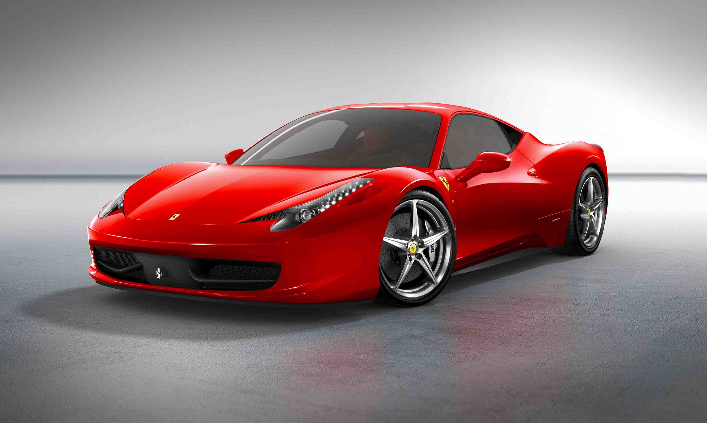

home

bonjour, je m'appelle [votre nom]. je suis photographe spécialisé dans l'automobile. je capture l'essence et la beauté des voitures grâce à un regard artistique et technique.
ce que je fais : je réalise des shootings, des portraits de voitures et des reportages sur des événements automobiles.
pourquoi je le fais : ma passion pour l'automobile et l'image m'inspire à créer des œuvres uniques qui racontent une histoire.
comment je procède : grâce à une technique soignée et un équipement professionnel, je mets en lumière chaque détail qui rend chaque véhicule exceptionnel.